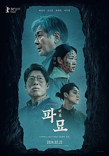

武語雯 Wen
A112070075
世新大學 · 資訊傳播學系
哈囉，我是武語雯，你可以叫我Wen，我是一個很悶騷的人，很喜歡自己出門，沒有其他人的拘束，想去哪裡就去哪裡很自由，而且我的步調很慢，我想好好享受當下看見的，不管是風景還是人事都好，
對我來說觀察是一件很有趣的事情，可以發現到其他人不曾察覺過的，漫步走在台北的街頭上，路上行人匆匆只有我獨自漫步可以讓我感覺到我是特別的存在
，除此之外我還很喜歡音樂、吃東西、玩遊戲還有看電影，音樂最主要是聽kpop比較多，電影的話，比起因為喜好不同跟朋友討論要看什麼，我更偏向我想看什麼就看什麼
，我的MBTI是ENTP，對，簡單來說就是賤人，我說話常常不經大腦以外還很難共感，很多F人感性的東西我真的沒辦法理解。

工作&社團經歷
哈根達斯工讀
超涼PT
上班的內容其實不多，工作起來滿輕鬆的，雖然是第一次打工，但是我還是很努力地在適應。
May 2023 - Now
桌遊社
玩起桌遊吵得跟瘋子一樣
是與朋友一起上的社團，透過不同的桌遊與其他人建立感情，而且玩桌遊的時候大家幾乎都沒有包袱，所以融入得很快。
August 2021 - June 2022
流行音樂社
第一次加大社團的邊緣社恐
社團內的人都是很喜歡音樂的，所以相處起來很愉快，大家也會交流自己喜歡的音樂，社團的老師還會帶著我們編寫詞曲，很有趣。
August 2020 - June 2021
技能
興趣
音樂
最主要都是聽KPOP比較多，也很喜歡聽日文歌以及一些歐美歌手，尤其特別喜歡曲風較為強烈的，音樂同時也是可以讓我與其他人交流的共同興趣之一，不論是歌它本身的意義或是背後的人去創作的理念都是我很喜歡的。
ATEEZ
團名ATEEZ=A TEEnager Z成為具備能讓10代(A TO Z)所有年輕人為之狂熱的一切的團體。曲風與舞台常被稱作「麻辣味的」，近幾年在海外的成績被稱作為「中小公司的奇蹟」。
推薦舞台:Deja Vu+흥+멋 Gayo Daejeon 2021
電影
都是看心情看，喜歡的類型很多，最主要喜歡看動畫、驚悚片、恐怖片以及喜劇，而電影可以讓我在一到兩小時的時間都翱翔在別人的故事裡，無論是主角的情緒，或是配角恰到好處的演技，都讓我像是親身經歷了那場故事一樣。

遊戲
我喜歡玩遊戲，我不常玩手遊，但是我特別喜歡玩射擊遊戲嘻嘻。